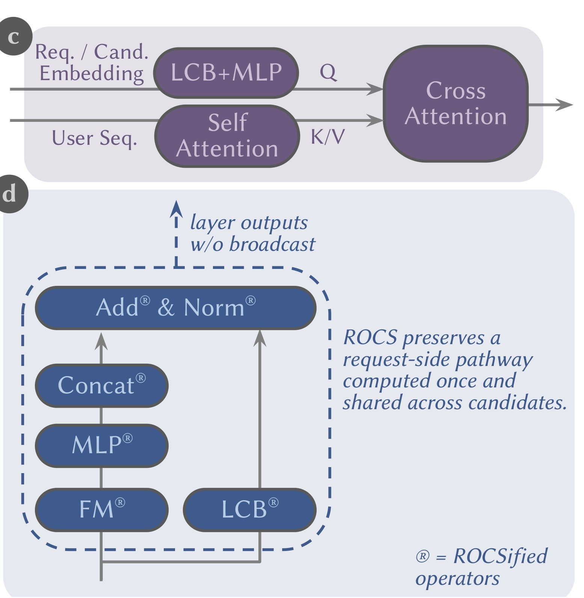
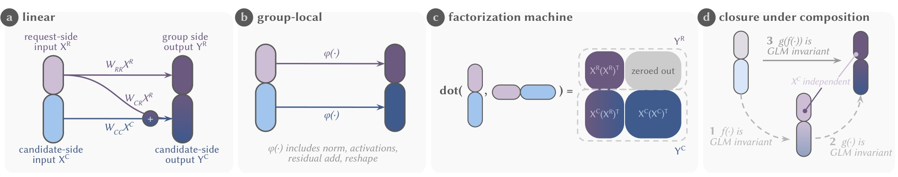
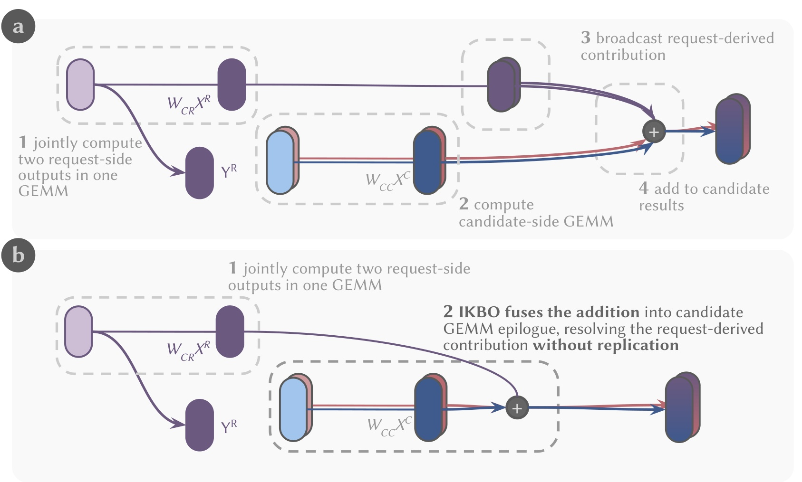
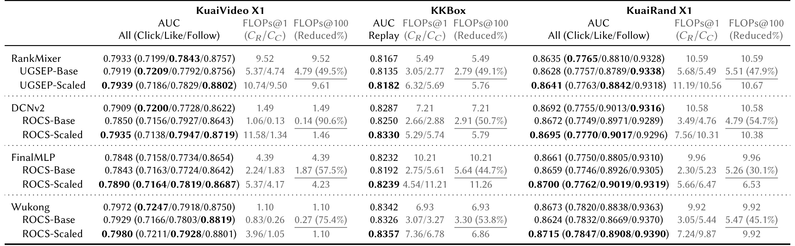
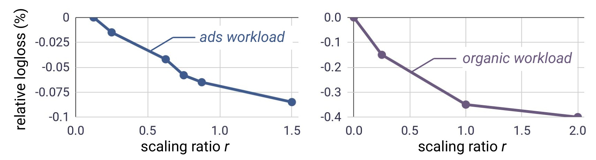
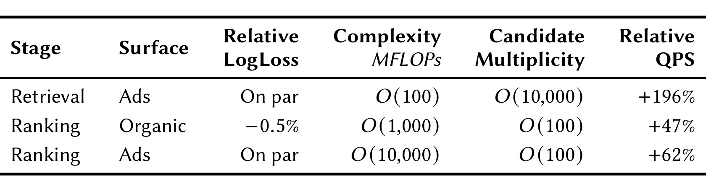
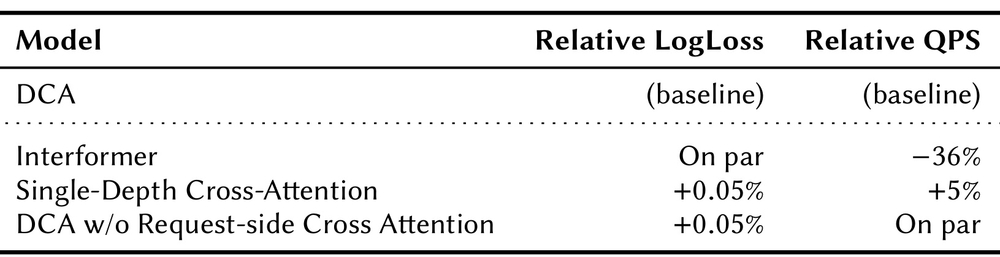
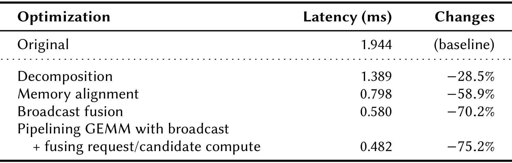
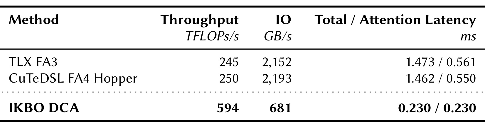

ROCS：面向请求的大规模推荐计算共享
ROCS（Request-Oriented Compute Sharing）讨论的不是再造一种独立推荐 backbone，而是怎样改造现有大规模推荐模型的依赖结构，使同一请求下对许多候选都相同的计算只执行一次。论文由 Yuxin Chen 等人完成，一作及作者团队机构为 Meta AI，2026 年 7 月 30 日以 arXiv v1 公开；唯一论文入口为 arXiv:2607.27744。PDF 首页脚注声明代码已经开源，但本轮没有从 arXiv 摘要页核验到独立仓库 URL，因此下文不提供未经确认的代码链接。论文给出的公开数据结果可以从原文表格复核，生产数据、回放流量与线上收益则都是 Meta 内部口径。
现代推荐模型依靠更大的特征交互与序列模块提升质量，但一个用户请求通常要同时评估许多候选，传统早融合却会让完全相同的请求特征过早受到候选污染，迫使昂贵模块按候选重复运行；若把交互一直推迟到最终打分，又会退化成表达能力受限的双塔。ROCS 要解决的核心矛盾，是在保留中间层请求—候选交互的同时，让请求侧路径仍能被精确复用。
1. 背景和问题
推荐在线推理天然具有“不对称批处理”结构。一次请求带来时间、位置、设备、用户画像以及行为序列，这些请求侧输入在本次请求的所有候选之间不变；物品 ID、类目和内容表示等候选侧输入则随候选改变。若请求对应的候选数为 N，任何只依赖请求的中间结果理论上都只需计算一次，成本可以摊到 N 个候选上。现实模型却往往在嵌入之后立即拼接请求与候选，随后送入 MLP、显式特征交互、归一化和序列注意力。此时即使某一输出通道看似“请求侧”，它也可能已经间接读取了候选，因而不能安全缓存；完整前向只能在候选批大小上重复。
这种冗余不是单个算子写慢了，而是模型依赖关系与服务执行单位不匹配。序列模型尤其明显：候选信号若在用户历史编码阶段就进入 self-attention，数百或上千条历史事件的编码、K/V 投影以及下游层都变成候选相关。候选越多，重复越严重；而推荐 scaling law 又鼓励继续扩大交互与序列计算，质量需求和容量/延迟约束便正面冲突。已有系统路线通常做模型合并、蒸馏、异步知识迁移或低精度执行，它们能降低单位成本，却没有直接消除“相同请求计算被重复 N 次”这一结构性来源，而且还可能受到跨任务干扰、知识传递损耗与新鲜度限制。
另一个极端是双塔：用户塔和物品塔分别编码，最后用点积或小型打分函数交互。双塔几乎把请求侧复用推到最大，适合超大规模召回，但中间层无法反复用候选条件读取用户信息，排序阶段所需的细粒度交叉表达会受限。部分 Transformer 或 RankMixer 专用方案已经使用注意力 mask 或 token 分组来保留用户侧表示，不过实际工业 backbone 还含线性压缩、MLP、归一化、残差和 factorization machine 等异构算子。只约束 attention 不足以保证这些模块没有把候选信号写回请求路径，也就缺少可组合、可验证的共享契约。
ROCS 因此把研究问题拆成四层。第一，如何给每个算子定义一个封闭于组合的依赖不变量，而不是凭“这层大概只看用户”来缓存。第二，序列编码如何保持共享，同时让每个候选仍能逐层检索不同的历史证据。第三，延迟交互会压缩候选相关通路的容量，节省的计算应怎样投入回模型以恢复甚至改善质量。第四，即使数学上拆出了请求批与候选批，若 GPU 实现仍物化广播，HBM 流量和 kernel 调度开销也会吞掉收益。论文的价值正是把模型约束、序列结构、容量分配和 kernel 共设计放在一条因果链上，而不是只给出一个缓存技巧。
需要预先限定适用面：ROCS 的收益依赖每个请求拥有多个候选，且有相当比例的计算能保持候选无关。单候选打分、候选乘数很低、或任务必须从最早层就进行强 user-item 交互时，可摊销空间会缩小。它也不声称 ROCSification 在固定参数量下必然无损；公开实验恰好显示 ROCS-Base 有时会轻微掉 AUC，论文用资源重分配来处理这个问题。因而正确问题不是“共享越多是否越好”，而是“在哪个依赖边界之前共享、边界之后保留多少候选表达，以及节省预算如何回投”。评价时还必须同时观察模型级 FLOPs、算子延迟、端到端 QPS 与预测质量：四者口径不同，不能用一个漂亮数字替代另一层证据。公开数据主要验证质量—计算前沿，Meta 内部回放和线上实验才涉及真实吞吐；这种证据层级差异贯穿全文。复现时还应报告候选数分布和尾延迟，否则均值上的共享收益可能掩盖低候选请求或调度抖动，难以判断方法在不同流量切片上的真实边界。
2. 方法
2.1 Generalized Layer Masking：把可复用性写成依赖契约
GLM 的起点是函数依赖，而不是张量命名。把一个算子的输入、输出按顺序分为 K 组，组 0 是最早的请求侧信息，后续组可以逐步引入候选。若两个输入在第 0 到第 i 组完全相同，那么第 i 个输出组也必须相同：
符号解释：\(x^{(0:i)}\) 表示从第 0 组到第 i 组的有序输入，\(f^{(i)}\) 是第 i 个输出组。这个定义允许信息从较早组流向较晚组，却禁止较晚的候选信息反向污染较早的请求输出。两组情形最直观：
符号解释：\(x^R\)、\(x^C\) 分别是请求与候选输入；\(f^R\) 只能读取请求，\(f^C\) 仍可同时读取二者。这个非对称性是 ROCS 区别于“把 user 和 item 永远隔开”的关键：共享路径不看候选，但候选路径没有被禁止消费请求信号。

截取的 Figure 1(c-d) 聚焦两种信息流。(c) 中用户序列经 self-attention 形成共享 K/V，请求/候选嵌入经 LCB+MLP 形成 query，再由 cross-attention 检索序列；候选条件进入 query，却不会写回共享序列。(d) 把同一原则落到 Wukong：LCB、FM、MLP、concat、add 与 norm 均被 ROCSify，虚线框内保留一条逐层向上传递的请求侧路径。图中的“without broadcast”不是候选永远不读请求，而是请求结果保持自然批大小，等候选算子消费时才按映射读取；所以 DCA 的共享 K/V 与 GLM 的共享特征通路可以组合，而非两套互不相干的缓存。
GLM 用块下三角依赖矩阵统一表达允许关系：
符号解释：\(M_{ij}=1\) 表示输出组 i 可以读取输入组 j。在线性层里，权重块先被该矩阵约束：
符号解释：\(W_{ij}\) 把输入组 j 映射到输出组 i，\(\widetilde W_{ij}\) 是受掩码约束的权重，\(b^{(i)}\) 为输出偏置。限制必须发生在算子内部；若先让普通算子混合全部输入、再把候选相关输出遮掉，请求通道可能早已含候选信息，语义上不能复用。二组 LCB 的结构可以写成：
符号解释：右上角为零意味着请求输出 \(Y^R\) 不读取候选 \(X^C\)；\(W_{CR}X^R\) 仍把请求贡献送入候选输出 \(Y^C\)。这既保证可共享性，也保留中间交互。

Figure 2 把同一契约落实到四类实际组件。(a) 的线性/LCB 将请求到候选的 \(W_{CR}X^R\) 保留，却去掉候选到请求的反向块；(b) 对 norm、activation、residual add 和 reshape 使用组内运算，避免统计量跨组；(c) 的 FM 只保留请求—请求、候选—请求和候选—候选交叉，矩阵右上角的请求输出—候选输入区域清零；(d) 说明组合封闭性：若 \(f\)、\(g\) 都遵守依赖顺序，\(g\circ f\) 也不会凭空产生候选到请求的信息流。这个封闭性让工程团队可以逐层 ROCSify 一个复杂 backbone，而不需要对整网做不可解释的缓存猜测；但任何未改造的跨组归一化或全连接混合都可能破坏保证。
FM 的一般形式将第 i 组与不晚于 i 的输入做交互：
符号解释：\(X^{(i)}(X^{(j)})^\top\) 是组 i 与组 j 的显式特征交叉，末尾的零块删除对未来组的依赖。由于各层对依赖契约封闭，对于共享请求 R 的候选 \(C_1,\ldots,C_N\) 有：
符号解释：方括号上标 R 表示取请求侧输出；等式给出“算一次、复用 N 次”的语义依据。它只保证 ROCSified 模块与其逻辑广播执行等价，不保证改造后的模型与原始早融合模型表达能力完全相同。
2.2 Deep Cross Attention：共享序列编码，保留候选条件检索
DCA 处理最棘手的序列依赖。传统 candidate-aware attention 让候选很早进入用户历史编码，因此每个候选都生成一套序列表示；纯共享编码又可能失去“当前候选决定该看哪段历史”的能力。DCA 将其拆为共享序列编码和候选条件检索：请求侧 encoder 在每层产生 \(S_i=\operatorname{Enc}_i(S_{i-1})\)，因为序列流不含候选，\(S_i\) 及其 K/V 投影每个请求只算一次；交互网络在每一深度生成请求与候选两组 query，再分别读取对应深度的共享序列。
两组 query 由 ROCSified LCB 和 MLP 生成：
符号解释：\(Y_{i-1}^R\)、\(Y_{i-1}^C\) 是上一交互层两组输出；\(Q_i^R\) 只含请求上下文，\(Q_i^C\) 可以含请求和候选。随后两组 query 读取同一层序列表示：
符号解释：\(S_i\) 是共享序列，\(W_K\)、\(W_V\) 生成 key/value，\(A_i^R\)、\(A_i^C\) 是两类 cross-attention 输出。请求 query 与 K/V 都只依赖请求，可按请求计算；候选 query 保持候选特异。每层 attention 输出再与相应 GLM 表示拼接，送入下一交互层，因此较深 query 已经含有前层交互上下文，可以从更深的 \(S_i\) 检索互补证据。DCA 没有额外训练目标，表达能力来自逐层查询位置；其可检验风险是单层 cross-attention 是否已经足够，以及请求侧 cross-attention 是否只是冗余，论文在 Table 3 分别消融。
2.3 Request-Oriented Resource Reallocation：把摊销预算投回请求侧容量
直接 ROCSify 会让部分通道必须留给候选无关表示，固定容量下可能挤压候选相关表达。RRR 不假定结构改造自动无损，而是利用成本不对称：候选侧计算每个候选付一次，请求侧计算只在请求上付一次。设请求侧 FLOPs 为 \(C_R\)、候选侧 FLOPs 为 \(C_C\)，一个请求有 N 个候选，则每候选摊销成本为：
符号解释：\(C_R/N\) 随 N 增大而下降，\(C_C\) 不被摊销。RRR 用请求侧缩放比 r 增大共享表示的宽度、层数或模块容量；相同新增 FLOPs 若放在候选侧要付 N 次，放在请求侧只付一次。因此 ROCS-Base 选择保留节省以追求效率，ROCS-Scaled 则在 \(N=100\) 的摊销预算大致与 Vanilla 对齐，把空间投回请求侧以恢复或超过 AUC。
这个策略不是免费午餐。实际 N 与训练时假定不一致时，成本对齐会变化；低候选训练可能看不到足够摊销。更重要的是，增加请求侧容量只能补充候选无关或候选可读取的共享知识，无法替代必须在最早阶段发生的特定交互。因此 r 是质量—成本控制旋钮，而非越大越好；论文的 Figure 4 只在两个内部 workload 的测试范围内显示持续改进，不能据此外推到任意模型和无限缩放。
2.4 In-Kernel Broadcast Optimization：在消费算子内解析请求映射
模型分解之后，朴素实现仍可能把 \(B_r\) 大小的请求结果复制到 \(B_c\)，再调用普通 GEMM 或 FlashAttention。这样虽然少做算术，却增加中间张量、HBM 写回和再次读取。IKBO 保持请求张量、候选张量处于自然批大小，并维护映射 \(m_i\)：候选 i 属于请求 \(m_i\)。对 LCB，先在请求批上联合计算 \(Y^R\) 和给候选的请求贡献 \(Z^{R\to C}=W_{CR}X^R\)，候选输出为：
符号解释：\(m_i\) 是请求—候选索引，\(Z_{m_i}^{R\to C}\) 是对应请求的预计算贡献，\(W_{CC}X_i^C\) 是候选本地 GEMM。IKBO 在候选 GEMM 的 epilogue 中查 \(m_i\)、从 cache/HBM 读取对应请求贡献、在寄存器相加并只写最终结果，既不写候选 GEMM 中间量，也不物化广播张量。

Figure 3(a) 的 dense 路径先用一次 GEMM 得到两个请求侧输出，再单独算候选 GEMM，之后把 \(W_{CR}X^R\) 复制到每个候选并相加；箭头 3 所代表的广播制造了重复数据。(b) 中前两步的数学结果不变，但第二个 GEMM 的 epilogue 直接解析索引并加载请求贡献，逻辑广播在消费点发生。论文还进一步用 persistent、warp-specialized kernel 让 producer 发起 TMA load、两个 consumer 在 WGMMA 主循环和复杂 epilogue 间乒乓；将请求/候选 tile 放进同一 mega-kernel，用 completion flag 而非全局 barrier 管依赖；通过双向 tile 调度缓解负载不均，并对分解后不满足对齐的维度零填充，以恢复宽加载和 TMA 路径。
DCA 的瓶颈不同：候选 query 很短，而用户 K/V 可长达数百或上千 token，标准 FlashAttention 难以在单个短 query tile 内充分复用 K/V。若先把 K/V 扩到候选批，同一请求的物理数据会位于不同地址，kernel 看不出它们可共享。IKBO-DCA 让专用 attention kernel 直接读取 \(B_r\) 大小的 K/V 和映射 m，属于同一请求的相邻候选访问同一物理 K/V；并把 block 顺序从“Q 块→head→候选”改为“Q 块→候选→head”，提高同请求 K/V 的 L2 时间局部性。持久化 TLX kernel 又跨多个短 query tile 复用流水与 barrier 初始化。因此 IKBO 的可移植边界不仅是模型结构，还包括 NVIDIA GPU、TMA/WGMMA、Triton/TLX 编译栈和候选排列局部性；数学原则可迁移，论文中的绝对延迟未必可直接跨硬件复现。
3. 实验结果
3.1 公开数据：结构泛化与质量—效率前沿
公开实验使用 KuaiRand、KuaiVideo 和 KKBox，数据处理来自 RecZoo。KuaiRand 有 1,000 个用户、4,369,953 个物品和 11,713,045 次交互；KuaiVideo 有 10,000 个用户、3,239,534 个物品和 13,661,383 次交互；两者评估 Click、Like、Follow 三类反馈的 AUC 与宏平均，KKBox 含 7,377,418 次交互并评估 Replay AUC。backbone 包括 DCNv2、FinalMLP、Wukong，另以 RankMixer/UGSEP 作为架构专用共享基线。所有公开模型用单张 96GB H100 训练，Adam 学习率 \(10^{-3}\)、batch size 65,536、最多 100 epoch、early-stop patience 5；Vanilla 配置先受约 10 MFLOPs/样本预算约束，再从搜索网格选择验证 AUC 最高者。
三个配置回答不同问题：Vanilla 是早融合原模型；ROCS-Base 在 \(N=1\) 时尽量匹配 Vanilla FLOPs，用来观察“只改依赖、不花摊销节省”的效果；ROCS-Scaled 在 \(N=100\) 时匹配 Vanilla 的摊销 FLOPs，用来检验 RRR。指标同时报告 AUC、FLOPs@1 的 \(C_R/C_C\) 分解和 FLOPs@100 的总摊销成本，避免只看质量或只看省算。

Table 1 呈现了一个重要而不完美的事实：ROCS-Base 常显著省 FLOPs，却可能掉 AUC。例如 KuaiVideo 上 Wukong 从 0.7972 降到 0.7929，但 FLOPs@100 从 1.10 降到 0.27，降幅 75.4%；DCNv2 的成本从 1.49 降到 0.14，降幅 90.6%，AUC 则从 0.7909 降到 0.7850。RRR 后的 ROCS-Scaled 把共享预算投回容量，Wukong 达 0.7980，DCNv2 达 0.7935，均高于对应 Vanilla。KKBox 上 Wukong 为 0.8342/0.8326/0.8357（Vanilla/Base/Scaled），KuaiRand 为 0.8673/0.8624/0.8715，也呈现 Base 先退、Scaled 再超的模式。FinalMLP 在三套数据上的 Scaled 也不差于 Vanilla。证据支持“可在相近摊销预算改善前沿”，却不支持“简单加 mask 就无损”。表中没有方差或显著性检验，公开实验的复现仍需已声明但未核验链接的代码与预处理细节。
3.2 RRR：请求侧扩容是否真的改善质量
生产规模研究固定候选侧容量，逐步增加请求侧计算比例，指标使用 relative LogLoss（RLL，越低越好）。这直接检验 RRR 的前提：共享通路变大后，模型能否利用额外容量，而不只是把 FLOPs 从候选侧挪到请求侧。

Figure 4 左右分别是 ads 与 organic workload。随着 scaling ratio r 增大，两条曲线的 relative LogLoss 都从 0 向负值移动；ads 在图示范围内约降至 -0.08%，organic 约降至 -0.4%，说明增加共享请求侧容量确实能转化为预测质量，而非只改变记账方式。曲线后段仍改善但边际形态不同，论文没有给置信区间、数据分层或更大 r 的饱和点，因此最稳妥的结论是“在两个内部模型和测试区间内单调改善”。它与 Table 1 的 Scaled 结果相互补强：公开数据给出多 backbone 外推，内部曲线给出容量控制变量；但内部图无法由外部读者重跑，绝不能据此声称普遍 scaling law 已成立。
3.3 生产端到端：必须分开的召回与短视频排序
论文在三个超过 1000 亿训练样本的内部 workload 上固定 Wukong，使用相同数据、特征、训练流程和服务环境对比 Vanilla；QPS 来自 H100 上生产流量回放。这里必须将两项核心结果分开理解。第一是 ads retrieval：候选乘数约 \(O(10{,}000)\)，复杂度约 \(O(100)\) MFLOPs，RLL 持平而 QPS +196%，即新 QPS 约为基线的 2.96 倍，所以摘要写“最高 3× QPS 且无质量下降”。第二是 short-form video organic ranking：候选乘数约 \(O(100)\)，复杂度约 \(O(1{,}000)\) MFLOPs，相对 LogLoss 改善 0.5%，QPS +47%；摘要将吞吐概括为 +50%。前者主要兑现高候选数下的摊销，后者把一部分预算回投容量，不能拼成“3× QPS 同时 LogLoss 改善 0.5%”这一不存在的单场景结论。

Table 2 还给出 ads ranking：复杂度约 \(O(10{,}000)\) MFLOPs、候选乘数约 \(O(100)\)，RLL 持平而 QPS +62%。三行结果跨越召回/排序、广告/自然内容和约两个数量级的模型复杂度，说明依赖契约不只适合轻量召回；同时候选数最高的 ads retrieval 获得最大 +196%，与 \(C_R/N\) 的摊销公式方向一致。短视频排序的精确表值是 QPS +47%，本文在复述摘要时写“约 +50%”但保留表值，避免四舍五入变成事实漂移。所有三行都是 Meta 内部数据与 replay QPS，论文没有公开模型维度、请求分布、尾延迟或置信区间，外部只能核验 PDF 内部叙述一致性，不能独立复核业务流量。
Section 5.3 另报告线上部署覆盖 Meta 数十个推荐模型。代表性结果包括短视频排序 topline +0.04% 且容量节省 32%，ads ranking topline 持平且容量节省 38%，ads retrieval topline +0.2% 且容量节省 29%。这些结果说明回放 QPS 可能转化为线上容量或质量，但 topline 指标定义、实验周期、流量切分与显著性均未公开，应该写作“作者报告的内部部署结果”，不能与公开 benchmark 等同。
3.4 DCA 消融：共享、深度与请求侧查询各自做了什么
端到端变好仍可能只是模型更大，Table 3 用内部 workload 分别替换 DCA 设计。Interformer 会让候选依赖进入序列处理栈，质量与 DCA 持平，但 QPS 降低 36%；这表明共享序列编码是吞吐关键。只在单一深度做 cross-attention 可获得 QPS +5%，却让 RLL 回退 0.05%；去掉请求侧 cross-attention 时 QPS 持平，RLL 同样回退 0.05%。

Table 3 的读法要注意 RLL 符号：相对 DCA 增加 +0.05% 是变差，不是提升。Interformer 一行隔离了“候选早进序列”的系统代价；Single-Depth 一行检验多层序列检索的表达收益；去 request-side cross-attention 一行说明仅保留候选 query 不足，请求路径也从序列中吸收信息并传给后续 GLM。三项合起来支持 DCA 的非对称设计：K/V 和序列 encoder 共享，候选 query 仍按候选变化，且不同深度持续检索。局限是表中只有一个内部设置和点估计，没有公开数据上的 DCA 消融，也没有 attention 长度、head 数和候选聚簇方式的敏感性分析；这些缺口会影响结论外推到其他序列长度和候选分布。
3.5 IKBO：模型级省算能否变成 GPU 延迟
IKBO-LCB 的实验按实现链逐步累积优化，而不是只给最终数字。Original 延迟 1.944 ms；仅分解请求/候选计算降到 1.389 ms；修复 memory alignment 后为 0.798 ms；把 broadcast-add 融入 GEMM epilogue 后为 0.580 ms；再让 GEMM 与 broadcast 流水重叠并融合请求/候选计算，达到 0.482 ms。

Table 4 对应的累计降幅依次为 28.5%、58.9%、70.2% 和 75.2%。分解本身只消除重复算术，仍不足以得到最终收益；对齐修复几乎再砍掉一大段延迟，说明拆分后的张量 stride 若破坏 TMA/宽加载，会成为隐藏瓶颈；broadcast fusion 则避免候选 GEMM 中间结果写回和请求贡献物化；最后的 persistent warp specialization 与 mega-kernel 调度把复杂 epilogue、load 和 WGMMA 重叠。这些是 LCB kernel 的内部延迟，不是整个推荐模型延迟，更不能直接解释 Table 2 的全部 QPS；端到端还包含 embedding、调度、通信及其他算子。
DCA 侧与两种优化 FlashAttention baseline 比较时，作者把显式 K/V 广播和 attention 都计入 total latency。TLX FA3 为 245 TFLOPs/s、2,152 GB/s、总延迟 1.473 ms/attention 0.561 ms；CuTeDSL FA4 Hopper 为 250 TFLOPs/s、2,193 GB/s、1.462/0.550 ms。IKBO-DCA 直接消费请求批 K/V，达到 594 TFLOPs/s、681 GB/s、0.230/0.230 ms。

Table 5 显示的机制信号比单一延迟更重要：IKBO-DCA 吞吐提高到约 2.4 倍，同时 IO 带宽从约 2.2 TB/s 降到 681 GB/s，说明它不是靠搬更多数据，而是消除了候选批 K/V 复制并提高同请求候选间的物理复用；总延迟等于 attention 延迟，也意味着显式广播阶段被移除。相对 0.55 ms 的 attention，0.230 ms 约为 58% 延迟下降。可是 baseline、输入形状、候选排列和 kernel 都针对 H100 推荐 workload；FA4 名称也对应论文使用的 Hopper 实现。外部没有核验到代码仓库，本表只能作为原文内可读的算子证据，不能推断其他 GPU、训练阶段或长 query 场景会保持相同比例。
4. 总结
ROCS 最有价值的贡献不是“缓存用户向量”这句表面描述，而是给缓存建立了可组合的语义契约。GLM 以块下三角依赖覆盖线性、压缩、归一化、残差和显式交叉；DCA 将候选感知序列建模拆成共享编码与逐层条件检索；RRR 正视固定容量下的表达损失，把按候选摊销的预算投入请求侧；IKBO 再把数学上的逻辑广播转成 GPU kernel 内索引、缓存复用和调度。四层缺一不可：没有依赖契约，复用可能不正确；没有 DCA，序列质量受损；没有 RRR，Base 可能掉 AUC；没有 IKBO，节省的 FLOPs 未必变成 QPS。
工程上最值得迁移的是先画依赖图，再决定缓存边界。可在现有召回或排序 backbone 中标记请求不变量、候选变量及第一个污染点，对每个归一化、concat、FM、attention 和 residual 检查是否满足“请求输出不读候选”。随后用线上候选乘数分布而非固定 N 计算 \(C_R/N\)，分别比较保留节省与 RRR 扩容。kernel 复现则应把“无物化广播”作为验收条件，同时测算 HBM 流量、L2 命中、尾延迟和不同候选排序；只看 FLOPs 会漏掉对齐、epilogue 和调度成本。
局限至少有五项。第一，候选乘数低时共享收益迅速下降，训练小 batch 与线上高 N 之间可能存在成本错配。第二，延迟候选交互会改变表达空间，ROCS-Base 的公开 AUC 回退证明结构约束并非天然无损。第三，生产实验全部是内部数据，缺少置信区间、尾延迟、流量分层和完整业务指标，外部无法独立复核“数十个模型”的普遍性。第四，IKBO 依赖现代 NVIDIA GPU、TMA/WGMMA 和 TLX/Triton 栈，跨硬件迁移成本高。第五，PDF 声明代码开源，但独立仓库链接本轮未核验；公开数据预处理、kernel 形状与生产实现仍不足以完整复现。
后续应优先做三件事：其一，核验作者正式代码仓库和许可证，以 Table 1 的 Wukong/DCNv2 配置复现 Base 掉点与 Scaled 回升，确认结果不是搜索预算差异；其二，在真实候选数分布上画质量、p50/p99 延迟、显存和成本前沿，测试低 N 退化点；其三，把 GLM 契约应用到含多任务 gate、跨特征 normalization 或 MoE 的 backbone，寻找最先破坏请求不变量的算子。若这些环节成立，ROCS 才不仅是一组 Meta 专用 kernel，而会成为推荐模型设计时可检查、可度量的“请求侧共享”原则。